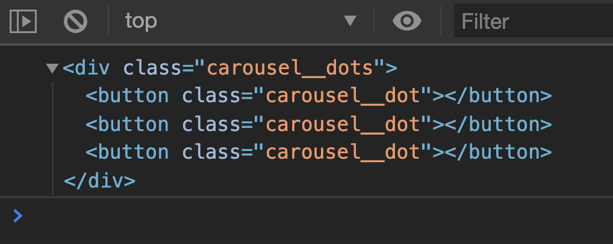

Since the number of dots is the same as the number of slides, we can create dots automatically with JavaScript. This lets us keep the number of dots and slides consistent without manual effort.
Removing old code
First, we’ll remove dots from the HTML and JavaScript.
// And remove these
const dotsContainer = carousel.querySelector('.carousel__dots')
const dots = [...carousel.querySelectorAll('.carousel__dot')]
You may need to comment out parts of the code that require dotsContainer and dots before we create the dots with JavaScript. (I’ll leave you to comment out the necessary code on your own).
If you log dotsContainer, you should see three <button> elements.

Adding the is-selected class
The first slide has the is-selected class, so the first dot should also have the is-selected class.
We can add the is-selected class in two ways:
Use the index. If index is 0, we know it’s the first dot.
Check if the slide contains is-selected. If slide contains the is-selected class, we know it’s the selected slide.
Both methods work, but the second one is more robust. It allows you to start the carousel on the second slide. (I’ll leave you to figure this one out if you’re interested. 😉 Hint: You need to write code to position .carousel__contents on the starting slide).
But remember, createDots used the slides variable. We need to make sure slides is available before we call createDots. This means we need to use createDots like this:
// Declare the slides variable
const slides = [...carousel.querySelectorAll('.carousel__slide')]
// Declare the createDots function
const createDots = _ => { /* ... */}
// Declare the dotsContainer variable using createDots
const dotsContainer = createDots()
After creating dotsContainer, we need to create the dots variable for use in other parts of our code. We also need to append dotsContainer into the DOM.
const dotsContainer = createDots()
const dots = [...dotsContainer.children]
// Adds dots into the DOM
carousel.appendChild(dotsContainer)
// Listen to dotsContainer
dotsContainer.addEventListener('click', event => {
// ...
})
Cleaning up
If you followed the steps so far, you’ll have a section of code that looks like this:
This variable -> function -> variable -> function order is not pretty. We get confused and slightly overwhelmed because there are too many things to keep track of.
Ideally, we want to put all variables in a block and all functions in another block to keep things simple:
// Variables
// ...
// Functions
// ...
We cannot pull createDots down into other functions because dotsContainer needs to use createDots. What we can do is bring createDots above the other variables:
Code can be quite fragile (especially in functions) if you use external variables. To fix this “flipping of order” thing, we can pass slides into createDots.
This way, we know dotsContainer must come after slides. There’s no mistake to order we declare these two variables.
We’ve been relying on external variables
We’ve been relying on external variables (and hence lexical scope) for every function we created for the carousel.
If you pay attention, you can see slides and dots variables used in functions. Here’s an example. In switchSlide, we used contents even though contents is not declared within switchSlide.
What we’ve done is ok! We don’t need to worry about these external variables because we know they are declared upfront. We won’t mistake the order we use the variables.
Hoisting
Since we brought createDots to the top of our JavaScript file, you can say we hoisted createDots manually.
We can hoist createDots automatically if we use a normal function instead of an arrow function. If we do this, we can keep all variables in one place and all functions in one place.
// Declaring all variables
// ...
const slides = [...carousel.querySelectorAll('.carousel__slide')]
const dotsContainer = createDots()
const dots = [...dotsContainer.children]
// Declaring all functions
function createDots(slides) {/* ... */}
// ...
Whether you do this is up to you.
That’s it!
(Bonus: You can also create previousButton and nextButton with JavaScript too. Try it! 😃).